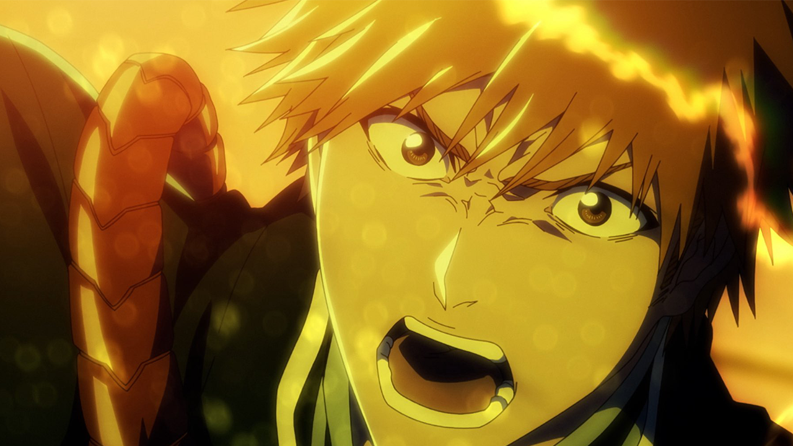
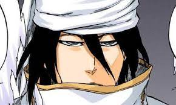
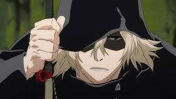
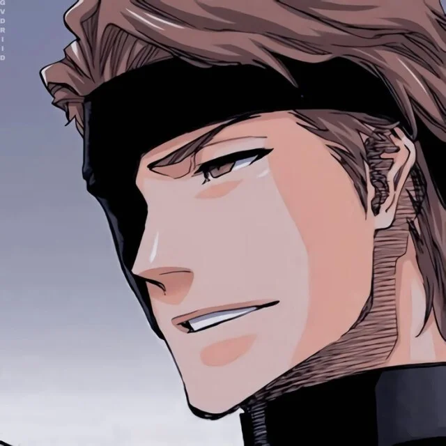
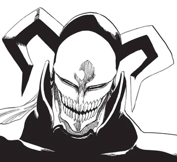

-

Personnage 1
Ichigo Kurosaki est un Humain qui a la faculté exceptionnelle de distinguer les fantômes. Sa vie bascule lorsqu'il rencontre Rukia Kuchiki, qui lui donne ses pouvoirs de Shinigami afin de sauver sa famille d'un Hollow. Il est le protagoniste principal du manga Bleach
-

Personnage 2
Byakuya Kuchiki est un personnage fictif de la série animée et manga Bleach créée par Tite Kubo. Il est capitaine de la Sixième Division pour le Gotei 13 et le frère de Rukia. Son vice-capitaine est Renji Abarai
-

Personnage 3
Kisuke Urahara (浦原 喜助, Urahara Kisuke) est l'ancien capitaine de la Douzième Division, ainsi que le créateur et Premier Président du Bureau de Développement Technique. Il vit actuellement au Monde des Humains,
-

Personnage 4
Il a auparavant servi comme lieutenant de la 5e division sous Shinji Hirako. Après avoir fait la guerre contre la Soul Society avec une armée d'Arrancar, Aizen a été vaincu par Ichigo Kurosaki et scellé par Kisuke Urahara.
-

Personnage 5
White (ホワイト, Howaito) est un dispositif expérimental Hollow utilisé par Sōsuke Aizen de nombreuses années avant sa défection de la Soul Society. Il a été créé sur la base de l'âme d'un Shinigami